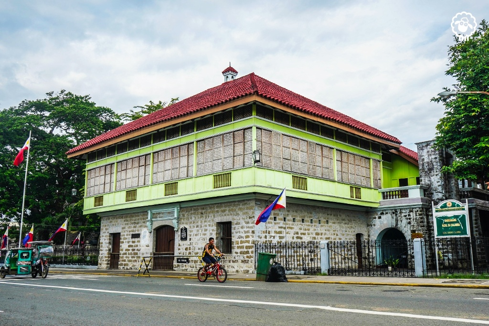
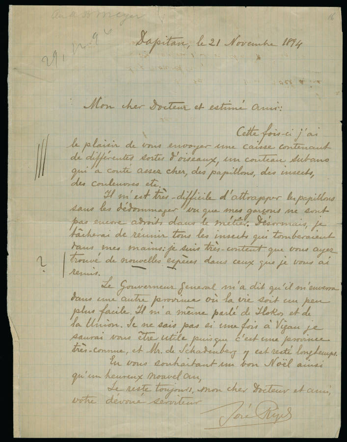

The Life, Works and Writings of Dr. Jose Rizal
A life told through ideas, writing, and history.
José Rizal was a Filipino physician and writer whose life and works continue to be studied as part of Philippine history. This site introduces his life, contributions, and writing.
Explore his life
A student-made historical archive
Inside this project
Start with the story
Places and artifacts
From the history desk

